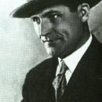

Клуцис Г.Г.
There are no translations available.
Клуцис Густав Густавович
Художник-авангардист, представитель конструктивизма, родоначальник советского плаката, один из создателей искусства цветного фотомонтажа.
04.01.1895–26.02.1938
Густав Клуцис родился близ города Руйена в латышской семье. В 1911—1915 гг. учился в художественных школах в Валмиере и Риге. Его учителями были Я. Розенталь, В. Пурвитис и Я.Р. Тиллбергс. В 1915 г. был призван в армию и поступил в Охтенскую пехотную часть в Петрограде. В 1917 г. вступил добровольцем в команду пулеметчиков Девятого полка Красных латышских стрелков. Латышам было доверено охранять членов нового советского правительства и «самого Ленина» Посещал рисовальную школу Всероссийского общества поощрения художеств в Петрограде (1915–1918 гг.). С 1918 г. жил преимущественно в Москве. К этому времени относятся первые сохранившиеся рисунки: зарисовки на темы из жизни латышских стрелков, эскизы оформления Кремля к 1 Мая 1918 года. Среди латышских стрелков оказалось немало талантливых молодых художников. Поселившись в Кремле, они тотчас организовали художественную мастерскую и в том же 1918 г. устроили в Кремле первую выставку своих работ, в которой принимал участие и Клуцис. После этого он продолжил свое художественное образование в Государственных свободных художественных мастерских (в 1918–1920 гг. у К.А. Коровина, К.С. Малевича и А.А. Певзнера) и Вхутемасе (1920–1921 гг.). Художники в эти первые послереволюционные годы с большим энтузиазмом работали в области прикладного искусства, конструировали мебель, производственную одежду, посуду, увлеченно рисовали плакаты. Плакатные опыты не пропали даром. Впоследствии Клуцис стал известен именно как художник-плакатист, родоначальник советского плаката. В 1920 году принимал участие в «Выставке живописи Натана Певзнера, скульптуры Н. Габо и школы Певзнера», а также в выставке «Уновис» (1921 г.). В 1922 г. разработал проекты праздничных установок для оформления Москвы к V годовщине Октября и IV конгрессу Коминтерна («Радиооратор. Рупор революции», «Радиооратор. Речь Ленина» и др.). Ряд графических конструкций Клуциса и проектов оформления экспонировались на международных выставках в Берлине (1922 г.) и в Париже (1925 г.). В 1922–1924 гг. создавал проекты одежды конструктивистского стиля. В 1927 г. выполнил витражи для павильона Всесоюзной полиграфической выставки. Принимал участие в оформлении советского отдела на Международной выставке прессы в Кельне (1928), а также создавал экспозиционное оборудование для Выставки советского искусства в Брюсселе. В 1924 году был приглашен на должность доцента по цветовой дисциплине во Вхутемас, где проработал вплоть до расформирования Вхутемаса — Вхутеина в 1930 г. В 1925–1927 гг. был членом редколлегии и художником Клуба Сокольнического вагоностроительного завода. В 1927 г. вышли в свет фотомонтажные политические плакаты, выполненные совместно с С. Сенькиным и изданные Агитпропом МК ВКП(б). В 1928 г. участвовал в организации общества «Октябрь», опубликовал серию многоцветных фотомонтажных открыток к Всесоюзной спартакиаде. С 1929 работал в плакатной секции Изогиза. В мае 1930 г. организовал фотомонтажный отдел на выставке объединения «Октябрь». В этом же году был зачислен на должность доцента Полиграфического института. В июне-июле был призван в армию на переподготовку в качестве слушателя Московских военно-политических курсов им. В. И. Ленина. В 1930–1935 гг. ежегодно участвовал в оформлении Москвы к массовым революционным праздникам и торжествам. Работал заместителем председателя Объединения работников революционного плаката (ОРРП), был членом бюро плакатного сектора МОССХа, ревизионной комиссии МОССХа, а также секции научных работников Института литературы, искусства и языка Комакадемии (секция пространственных искусств), где в июне 1931 г. на дискуссии о плакатно-картинной литературе выступил с докладом «Фотомонтаж как новый вид агитационного искусства». Совместно с С. Сенькиным был командирован в города Тифлис, Батуми, Сухуми, Горловка (Донбасс) и др. для фотосъемок, зарисовок, этюдов по темам, отображающим социалистическое строительство (1931). Впервые применил двухцветный фотомонтаж для оформления передовой полосы праздничных номеров газеты «Правда». Работал над рукописью «Право на эксперимент» (1935). В 1936 году занимался станковой живописью и графикой, ездил в творческую командировку по заданию латышского общества «Прометей» в латышские землячества в Харькове, Днепропетровске, Ростове-на-Дону, в латышский колхоз им. Рудзутака (Азово-Черноморский край), где были созданы серии рисунков и живописных работ. Незадолго до ареста, В мае-июне 1937 г. Клуцис был командирован в Париж в качестве художника-оформителя на Всемирную выставку «Искусство и техника в современной жизни» («Ехал в Париж через Германию» , — многозначительно запишет позже следователь.) Готовился к Международной выставке в Нью-Йорке. Всего же Г. Клуцис за недолгие годы своей творческой деятельности принял участие в сорока семи выставках.1920-е гг.были необычайным, счастливым для художников временем. Русский авангард, вошедший в историю мирового искусства как праздник свободного, ничем не стесненного творчества, казался лишь началом новой эпохи, обещавшим новые открытия и достижения. Чуть ли не ежедневно возникали и рассыпались различные «группы», объединения и ассоциации — со своими манифестами и планами преобразования мира силами искусства. Густав Клуцис в разное время сотрудничал с литературно-художественным объединением «Левый фронт искусств» (ЛЕФ), с обществом «Утвердители нового искусства» (Уновис), латышским культурно-просветительским обществом «Прометей». Художественная жизнь столицы била ключом. Художники тех лет радовались как дети, созидая мир новых форм, и долгое время не видели (или не хотели видеть) сгущающихся вокруг туч. Но годы шли. Экстравагантные опыты не находили признания в народе. Исподволь вырабатывалось и надвигалось официальное искусство, названное позже искусством социалистического реализма. В 30-е и последующие годы отклонения от него в ту или иную сторону приобретали все более опасный политический оттенок. Причиной ареста Густава Клуциса и большинства латышских художников были не идейные разногласия «с основной линией партии» (их просто не было и не могло быть), а массовая акция по истреблению «националов». Всем было предъявлено стандартное обвинение в принадлежности к контрреволюционной фашистской террористической организации, существовавшей при латышском обществе «Прометей», членами которого они являлись. Подследственных держали в Таганской тюрьме. По постановлению «двойки» — Комиссии НКВД и Прокуратуры СССР — Густав Клуцис был расстрелян на Бутовском полигоне 26 февраля 1938 г. О работах большинства расстрелянных художников очень мало информации. Эти сведения или совсем отсутствуют или носят, в духе того времени, вполне курьезный характер. Так, в следственном деле Клуциса, художника с мировой известностью, мы находим список его работ за 1918—1935 гг., где определяющим (и единственным!) фактором является метраж изобразительной площади. Политический плакат исчисляется в 75 кв. м, рисунки в газете «Правда» — 4,9 кв. м, книги, открытки — 5 кв. м, оформление города, панно, работа в театре — 4,6 кв. м; «аналитический период: кубизм, футуризм, беспредметничество, фотомонтаж» — 3,2 кв. м. «Всего, — подводится итог творческого пути художника за семнадцать лет, — 100 кв. м изоплощади». Тем не мене, творческое наследие Клуциса удалось сохранить его жене — В.Н. Кулагиной. Произведения художника находятся в Третьяковской галерее, музее В.В. Маяковского, Музее современного искусства в Нью-Йорке, и в музеях Латвии. Среди его наиболее известных работ — «Красный человек» (1918), «Динамический город» (1919), «Аксонометрическая живопись» (1920), «Выполним план великих работ» (1930), «СССР — ударная бригада пролетариата всего мира» (1931).
| Киров С.М.< Prev | Next >Кнорин В.Г. |
|---|